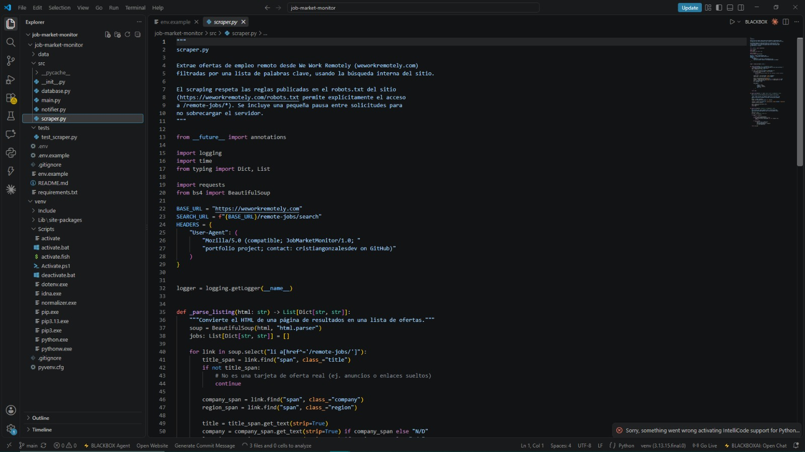
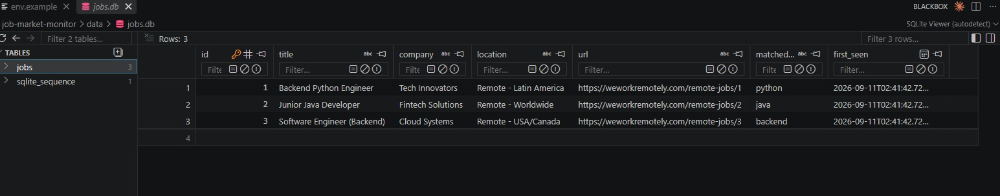
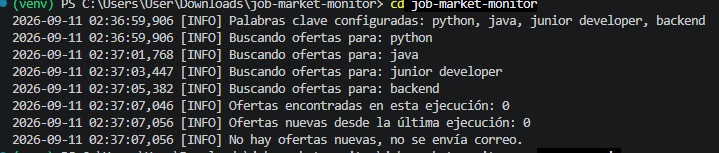

Web Scraping
Extrae datos en tiempo real de We Work Remotely buscando palabras clave específicas como 'python', 'java' o 'backend'.
Proyecto de automatización
Automatización en Python para rastrear ofertas de empleo remoto en We Work Remotely.
El sistema hace web scraping basado en palabras clave, guarda el historial de empleos encontrados en una base de datos local y envía correos automáticos únicamente cuando hay ofertas nuevas.
Funcionalidades
Extrae datos en tiempo real de We Work Remotely buscando palabras clave específicas como 'python', 'java' o 'backend'.
Almacena un historial de las ofertas vistas en una base de datos SQLite para identificar cuáles son realmente nuevas.
Envia automáticamente un reporte estructurado por email con las nuevas vacantes encontradas en cada ejecución.
Vista técnica
El proyecto está diseñado para ser un script silencioso y eficiente sin depender de interfaces gráficas pesadas.



Tecnología
Desarrollado en Python aprovechando bibliotecas estándar y de terceros para scraping, bases de datos y correos.
Consulta el código fuente, la descripción detallada y las instrucciones de uso en el repositorio.